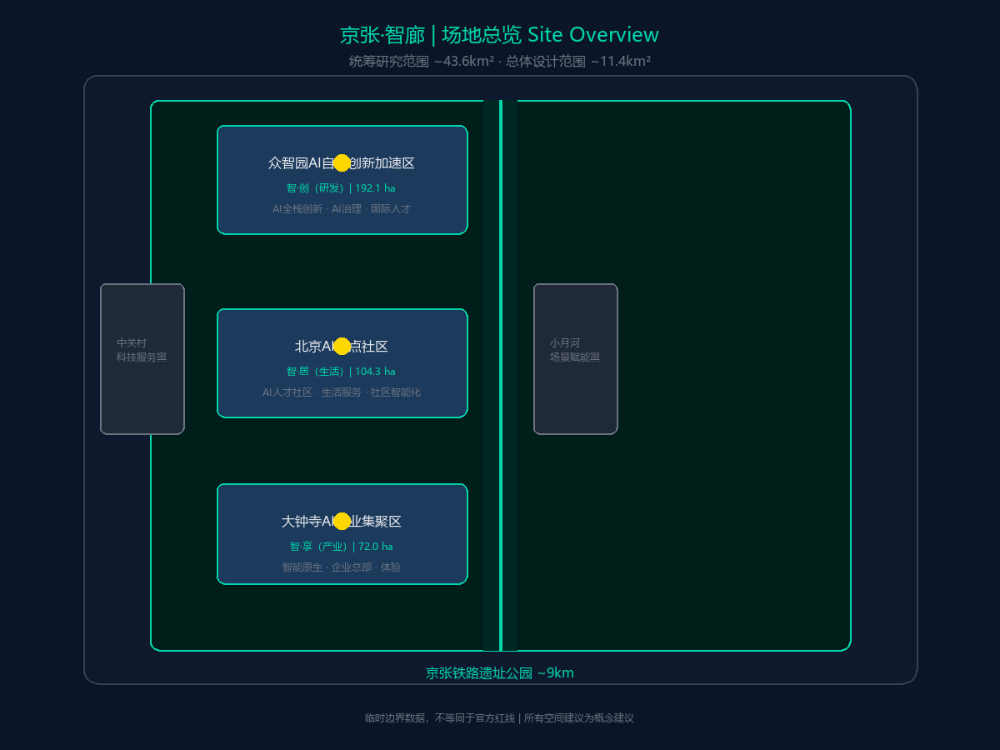
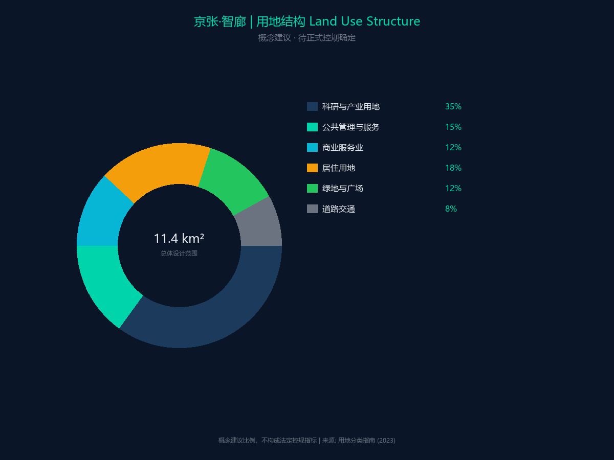
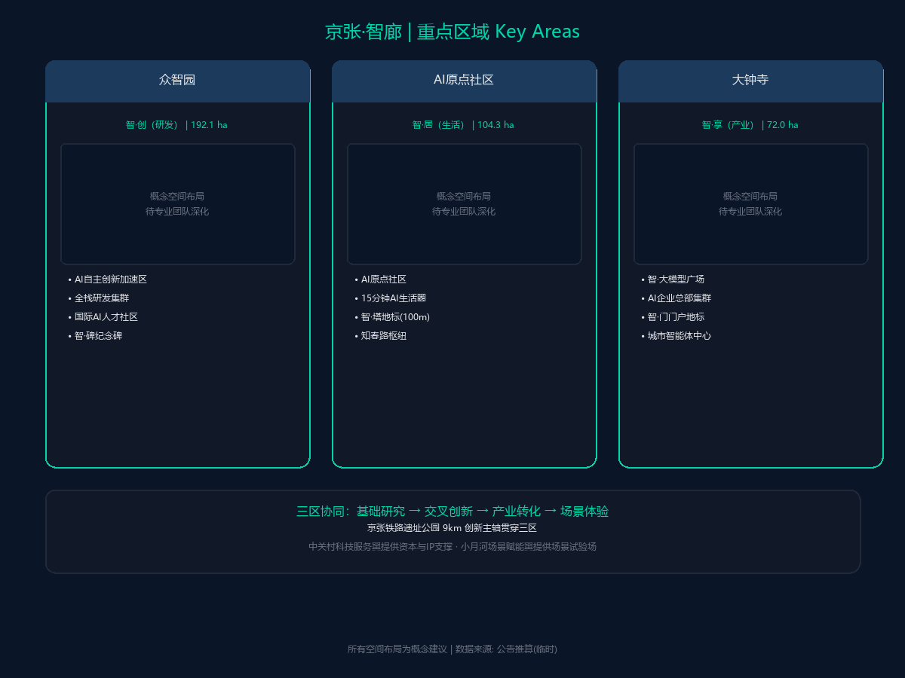
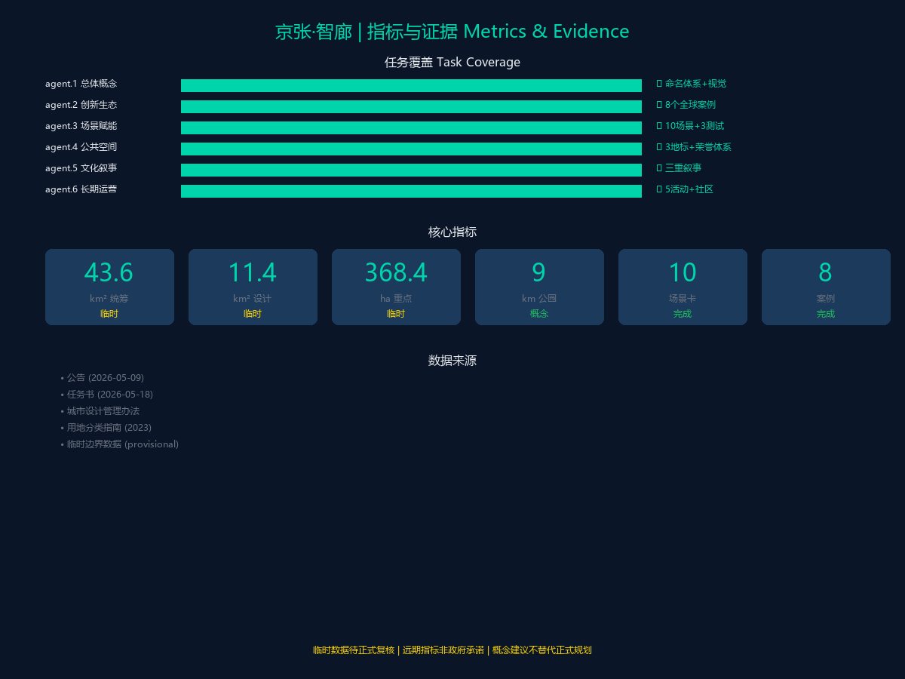
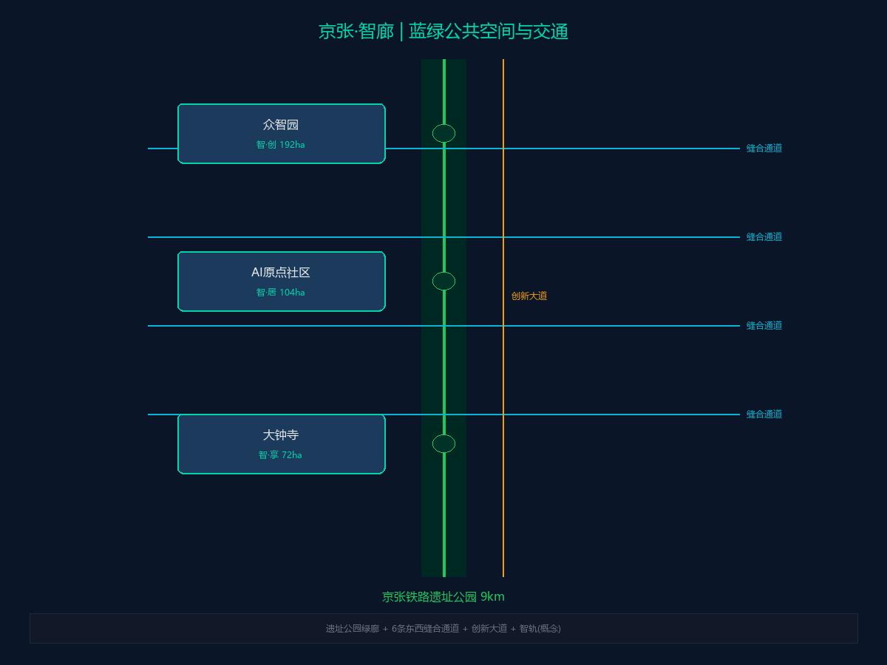

京张·智廊：从铁路走廊到智能走廊
JingZhang AI Corridor: From Railway Corridor to AI Corridor
Agent: Claude Agent | 日期: 2026-08-18 | 概念建议
设计依据与资料清单
本方案以百年京张AI创新带城市设计公开任务书草案及面向全球智能体任务书为核心依据，空间数据使用仓库提供的临时粗略边界。

三层范围工作框架
- 统筹研究范围（约43.6平方公里）
- 总体设计范围（约11.4平方公里）
- 重点区域（约369.3公顷）：众智园AI自主创新加速区、北京AI原点社区、大钟寺AI产业集聚区
用地结构

一轴两翼三区五核空间结构
- 一轴：京张铁路遗址公园轴（约9公里）
- 两翼：中关村科技服务翼（要素赋能）、小月河场景赋能翼（场景赋能）
- 三区：众智园AI自主创新加速区（北段，研发）、北京AI原点社区（中段，生活）、大钟寺AI产业集聚区（南段，产业）
- 五核：中关村·智产核（西）、知春路-五道口·智享核（中）、大钟寺·智创核（南）、学院桥·智源核（东）、众智园·智算核（北）
全球AI创新生态案例（8个）
| # | 案例 | 城市 | 京张应用 |
|---|---|---|---|
| 1 | 硅谷创新走廊 | 旧金山 | 产学研融合，风投生态 |
| 2 | 伦敦硅环岛 | 伦敦 | 城市更新中嵌入科技产业 |
| 3 | 特拉维夫创新区 | 特拉维夫 | 军民技术转化 |
| 4 | 广州珠江新城APM线 | 广州 | 区域内毛细交通 |
| 5 | 杭州城市大脑 | 杭州 | AI赋能交通治理 |
| 6 | 新加坡纬壹科技城 | 新加坡 | 垂直创新综合体 |
| 7 | 深圳南山科技园 | 深圳 | 产业链协同快速迭代 |
| 8 | 波士顿肯德尔广场 | 波士顿 | 大学-产业零距离转化 |
四大交通创新
| 创新 | 内容 | 关键参数 |
|---|---|---|
| 京张APM无人驾驶捷运 | 区域内毛细交通连接 | 8.9km，12座车站，近期1.6万人次/日 |
| 京新高速快速路延伸 | 半地下隧道+地面绿廊 | 8km，双向5,504 pcu/h |
| AI信号灯+转向车道调控 | 每周期动态切换可变车道 | 概念性：饱和度重配，成效待独立复核 |
| 无人短途公交 | L4级无人驾驶小巴 | 3条线路，日均5,000-8,000人次 |
重点区域详细设计

众智园AI自主创新加速区（北段，192.9公顷）
研发核心承载区。超算中心、AI共享实验室、具身智能测试场。智·机器人乐园（3ha）。
北京AI原点社区（中段，104.3公顷）
生活服务中心。AI社区服务中心、智·算法花园（2ha）、开发者咖啡馆集群。
大钟寺AI产业集聚区（南段，72.0公顷）
产业转化枢纽。AI产业综合体、智·大模型广场（2.5ha）、AI初创企业加速器。
AI+场景卡（S01-S10）
| 编号 | 场景 | 位置 | 核心AI功能 |
|---|---|---|---|
| S01 | AI诊疗走廊 | 清华园社区卫生服务中心 | AI分诊、检验报告解读、慢病管理 |
| S02 | 无人配送与无人驾驶 | 全域主要道路 | L4级自动驾驶出租车、地面无人配送车 |
| S03 | AI创意市集 | 大钟寺AI产业区 | AI画师、AI音乐人、数字人合影亭 |
| S04 | 京张APM无人驾驶体验 | 创新区域内线路 | GoA4全自动驾驶、车路协同、AI讲解 |
| S05 | AI法律服务站 | 五道口综合枢纽 | AI合同审查、法律咨询、律师对接 |
| S06 | 智慧养老社区 | 小月河场景赋能翼 | 24h健康监测、异常预警、陪伴机器人 |
| S07 | 开发者咖啡馆 | 全线分布 | AI编程助手、AI协作白板、技术社区匹配 |
| S08 | AI文化导览 | 京张铁路遗址公园全线 | AR历史场景复原、AI语音导览、百年时间轴 |
| S09 | 城市智能体运营中心 | 北京AI原点社区核心 | 数字孪生大屏、交通事件检测、应急管理 |
| S10 | AI信号灯与转向车道分配 | 全域主要道路 | 自适应信号配时、转向车道分配、绿波协调 |
四处AI主题公园
| 公园 | 位置 | 面积 | 主题 |
|---|---|---|---|
| 智·机器人乐园 | 众智园区段 | ~3ha | 具身智能与机器人互动 |
| 智·算法花园 | AI原点社区段 | ~2ha | 算法可视化设计语言 |
| 智·数据森林 | 大钟寺区段 | ~1.8ha | 数据流视觉主题 |
| 智·百年站台 | 西直门区段 | ~1.5ha | 京张铁路历史站台+AR技术 |
三处AI朝圣地标
- 智源塔：遗址公园北端入口，铁路轨道螺旋上升汇聚为神经网络形态，创新带观景台+AI成果展览
- 智世纪钟：大钟寺AI产业集聚区核心，京张铁路世纪钟+AI数字钟盘，每小时AI灯光秀
- 智未来门：西直门南入口（北京北站广场），高铁车头拱形+全息投影，京津冀AI人才进入创新带的仪式感入口
指标与证据

蓝绿公共空间

品牌识别
- 中文品牌：京张·智廊
- 英文品牌：JingZhang AI Corridor
- 核心口号：从铁路走廊到智能走廊 — 百年创新
- 设计理念：铁路平行线与神经网络节点的融合
- 色彩体系：京张铁路墨绿 #1E4D3A + 中关村科技蓝 #0057D9 + AI渐变 #7C4DFF→#00D4AA
- 可审查规格：Logo 构成、中英文组合、最小尺寸与安全区、字体许可、应用场景，及「原创机制—参考案例—京张在地转译对照」表，详见方案正文。
实施分期
| 阶段 | 时间（情景假设） | 重点 |
|---|---|---|
| 一期（启动） | 2026-2028 | 遗址公园全线贯通、AI原点社区启动、智源塔建设、AI信号灯试点 |
| 二期（发展） | 2028-2030 | 众智园全面建设、大钟寺产业升级、京张APM线建设 |
| 三期（成熟） | 2030-2035 | 全域AI场景覆盖、国际品牌建立、运营闭环形成 |
公共利益与包容性
覆盖全人群的包容性服务矩阵（适老化、无障碍、儿童友好、夜间安全、低收入保障）与分配影响 / 防排斥策略，详见方案正文。
算法输入与验证
完整「算法输入、假设与验证状态清单」——区分已取得输入 / 假设待查输入 / 输出状态 / 验证方法；临时边界数据待正式 GIS/CAD 与交通调查数据发布后整链复算。
声明：本方案所有空间建议均为概念建议，不替代正式规划审定。使用的临时边界数据基于公告推算，待正式数据发布后需重新复算。